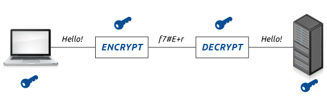
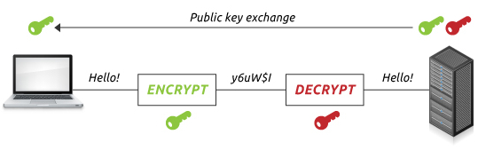

In the use of symmetric encryption, the same key is used to encrypt and decrypt the data. The sender and reciever must have the same key in order to communicate.

The sizes of symmetric keys are generally 128 or 256 bits. The larger they are, the harder to crack as a larger size gives more encryption code possibilities. A brute force attack on this scale would be very difficult to achieve in a realistic amount of time.
However, this does not make symmetric encryption completely safe. The same key is used for the encryption and decryption process which means that the key itself must be transferred between the sender and reciever.
The key being transferred introduces a major risk because it gives attackers a chance to intercept the key, thus reducing the security of the encrypted data. Once the attacker has a copy of the key, they would be able to access all the data that is being sent or even set up a man-in-the-middle attack, allowing a malicious hacker to alter the data in transit.
However, a solution to this security risk was created in the form of asymmetric encryption.
Asymmetric encryption uses different keys for the process of encrypting and decrypting the data. One of the keys is public while the other is kept private.

In asymmetric encryption, two keys are used. The public key is used to encrypt the data and available and can be used by anyone. The other of the pair of keys must always be kept secret and can be used to decrypt data that has been encrypted with the public key.
The keys themselves are generally 1024 or 2048 bit large numbers which are more than sufficiently large for an average computer to brute force. Larger keys can be used but the added security they provide does not outweigh the extra computational power that would be required.
The main advantage of asymmetric encryption is that the key used to decrypt data should never be transferred between two parties. This means that (not including user error) an attacker will never be able to decrypt data that has been encrypted asymmetrically.
However, asymmetric encryption is also much slower than symmetric which means it cannot be used in every occasion.
Both forms of encryption have their advantages.